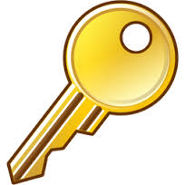

Respecting Your Own Privacy
 Hectors World Internet Safety Video
Why do we use keys? How do they help us? Why do we have to keep our houses locked up? What are some things in our houses that are important to lock up?
What information is it important to lock up and keep private? Let's look at this fake Facebook Profile and see if there is anything on it that we think should be kept private.
Link to Fakebook PageHow can we keep our information private? The best ways are to:
- Be VERY careful what you post online.
- NEVER share your password with anyone else. That way they can't post stuff on your account.
Today's Assignment
Use Kid Pix to make a poster showing ways to keep your information safe on the Internet. When you are done, Export it, and post it to your blog.
Extension Activity
Go on your friends blogs and leave them comments about their work.
Click Here to go the Class Blogs PageBack to School Portal